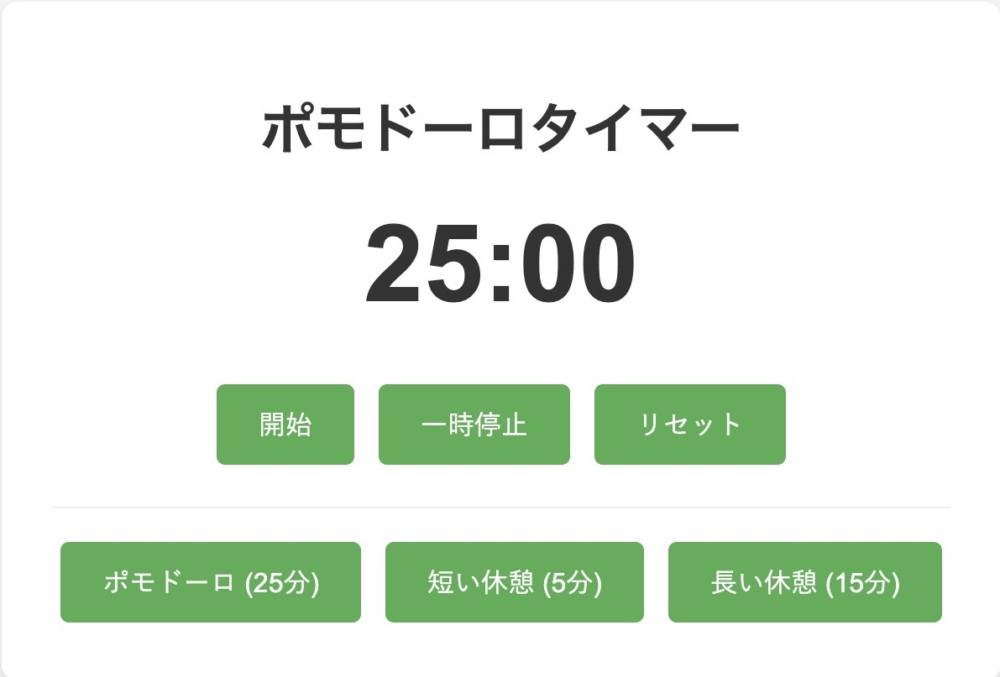
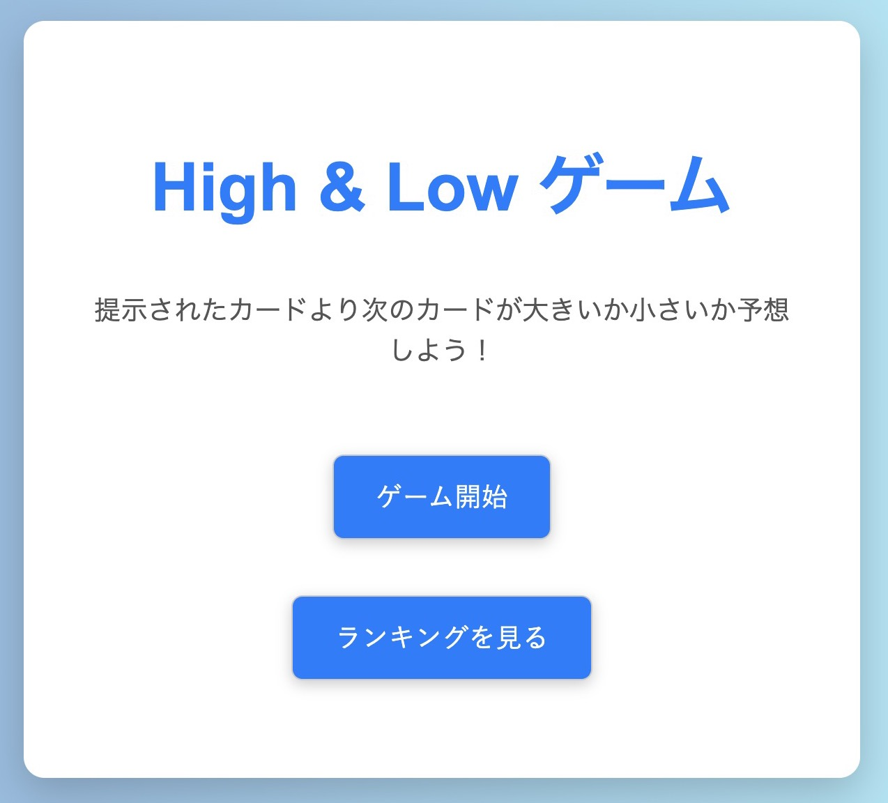

このサイトについて
このサイトは、私の「Vibe Cording」の練習と探求の記録です。ここでは、日々のインスピレーションから生まれた様々なツールやゲーム、ランディングページ、そしてWebサービスのプロトタイプを紹介しています。
コードを通じてアイデアを具現化し、新しい技術や表現方法を試す中で生まれた、創造性と実践の軌跡をご覧ください。それぞれのプロジェクトが、私の「Vibe Cording」の成長を物語っています。
マイツール
ポモドーロタイマー

集中力を高め、効率的な時間管理をサポートする、シンプルで直感的なタイマーです。ポモドーロテクニックを実践し、作業の質を高めます。
High & Low ゲーム

提示されたカードの数字が、次に現れるカードの数字より大きいか小さいかを予想するシンプルなゲームです。連続正解を目指しましょう！